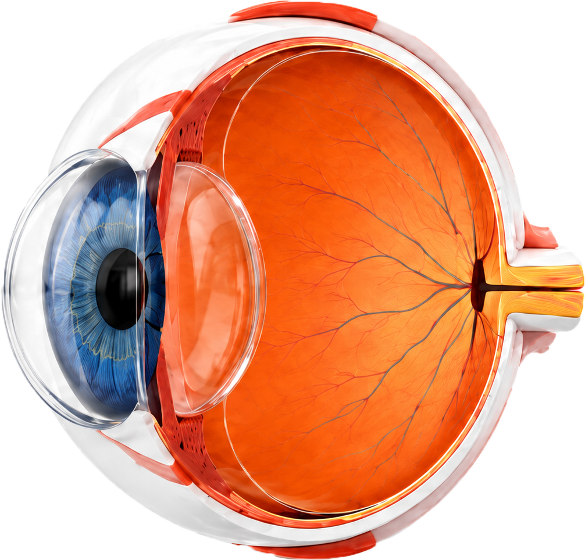

基础知识 · 01
从光线到视觉
理解外界光线如何经过人眼并最终形成视觉，是进入屈光实验前的第一步。
1
光线进入
来自物体的光线进入人眼。
2
角膜/晶状体折射
光线依次通过角膜和晶状体发生折射，逐渐会聚。
3
视网膜成像
光线在视网膜上形成倒立、缩小的实像。
4
视神经传导
视网膜上的信息通过视神经传递到大脑。
5
大脑识别
大脑对接收到的信号进行处理与识别，形成视觉。
?
小知识
视网膜成像是倒立、缩小的实像，但我们看到的世界是正立的、真实的，这是因为大脑对图像进行了处理与理解。

?
小知识
人眼的屈光系统相当于一台精密的光学仪器。角膜和晶状体共同作用，将外界物体反射的光线聚焦在视网膜上，形成清晰的像。
?
角膜
光线首先经过角膜。角膜透明且屈光力强，是外界光线进入眼内后的第一道会聚结构。
1正常眼
平行光线经过角膜和晶状体屈折后，焦点正好落在视网膜上，形成清晰图像。
成像清晰视觉舒适
2近视眼
眼轴过长或屈光力过强，光线过度聚焦，焦点落在视网膜前，远处物体模糊。
眼轴过长远处模糊
3远视眼
眼轴过短或屈光力不足，光线聚焦不足，焦点落在视网膜后，近处物体模糊。
眼轴过短近处模糊
4散光
角膜或晶状体曲率在不同方向不一致，光线在不同子午线上聚焦于不同位置。
曲率不均匀视觉扭曲
?
小知识
屈光不正的本质，是外界光线进入眼内后没有准确聚焦在视网膜上，因此产生模糊视觉。
凸透镜
使平行光线会聚到一点。
用途：适合矫正远视。
凹透镜
使平行光线发散。
用途：适合矫正近视。
柱面镜
主要改变某一方向的屈光力。
用途：适合矫正散光。
物距 u
物体到透镜光学中心的距离。
像距 v
像到透镜光学中心的距离。
焦距 f
平行光经透镜会聚或发散的关键距离。
放大率 m
像的高度与物体高度的比值。
1/f = 1/u + 1/v m = -v/u
i
小知识
在实验中，透镜位置固定时，改变物距会影响像距和放大率；焦距由镜片本身决定，是衡量镜片屈光能力的关键参数。